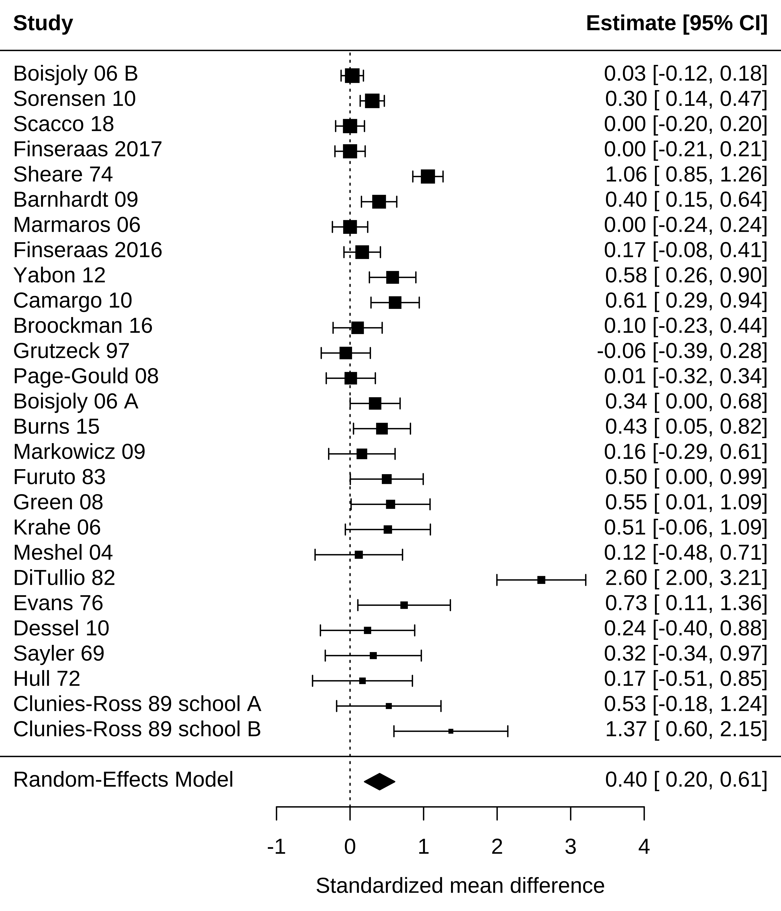
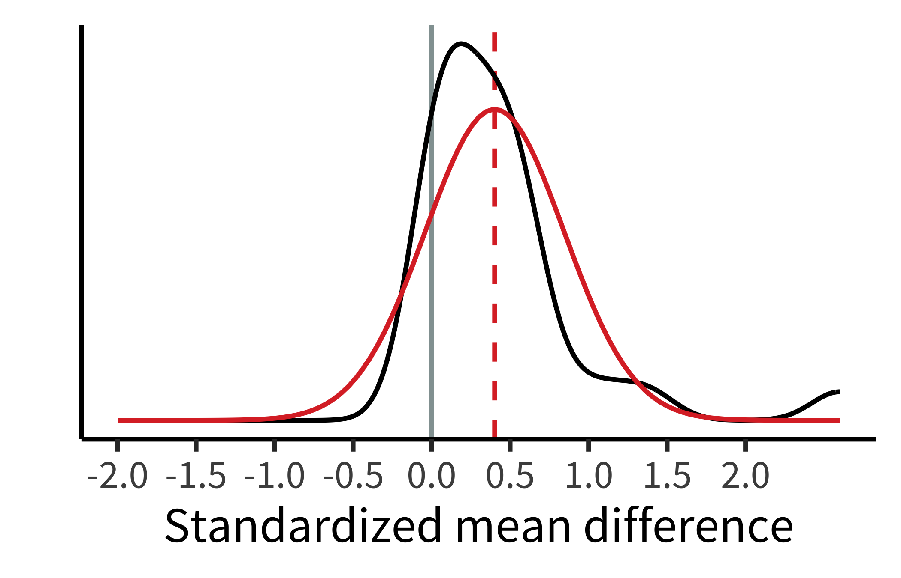
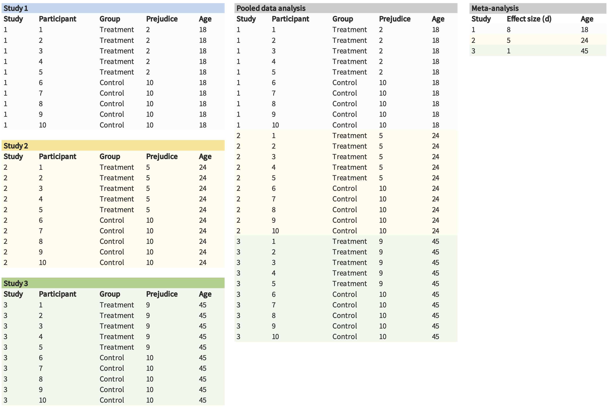
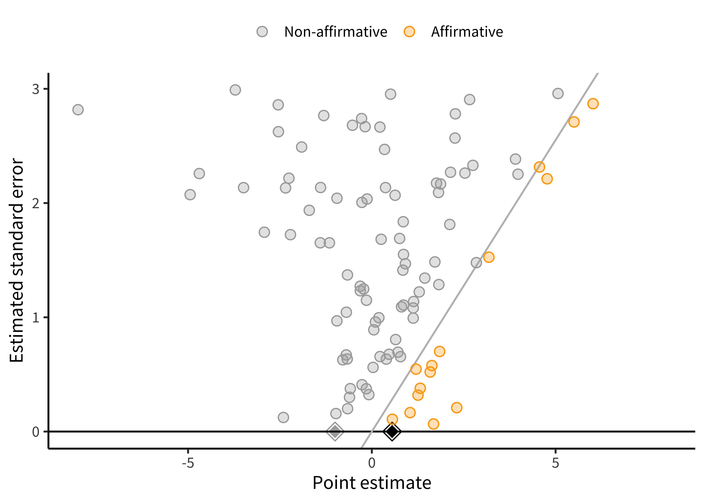
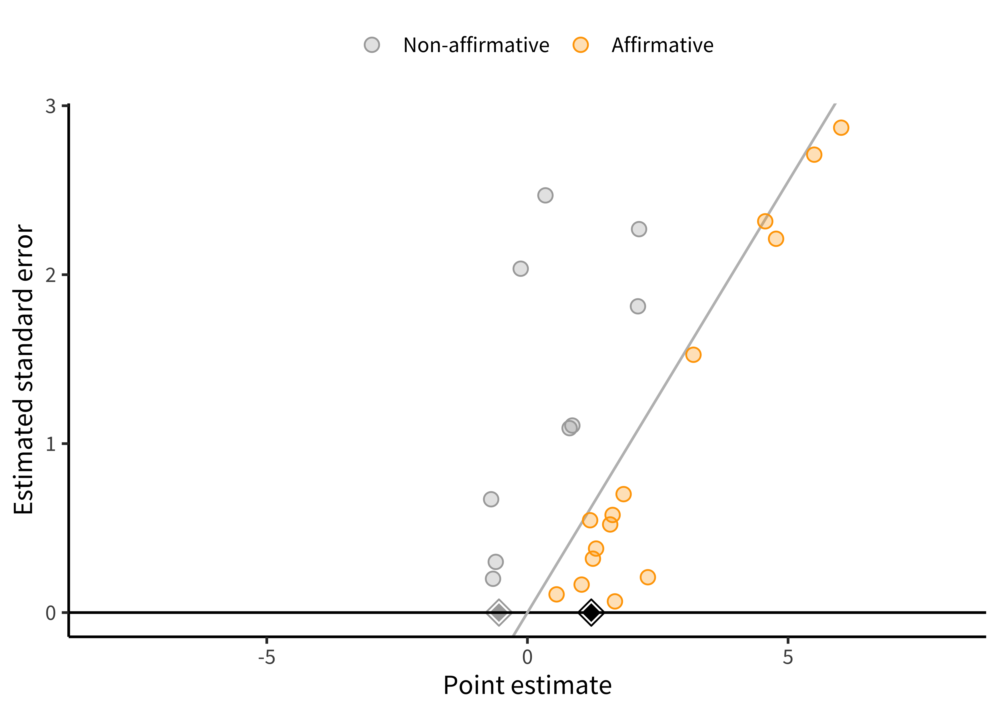

| name | pub_date | target | n_total | d | var_d |
|---|---|---|---|---|---|
| Boisjoly 06 B | 2006 | race | 1243 | 0.030 | 0.006 |
| Sorensen 10 | 2010 | race | 597 | 0.302 | 0.007 |
| Scacco 18 | 2018 | religion | 474 | 0.000 | 0.010 |
| Finseraas 2017 | 2017 | foreigners | 577 | 0.000 | 0.011 |
| Sheare 74 | 1974 | disability | 400 | 1.059 | 0.011 |
| Barnhardt 09 | 2009 | religion | 312 | 0.395 | 0.015 |
16 Meta-analysis
learning goals
- Discuss the benefits of synthesizing evidence across studies
- Conduct a simple fixed-effects or random-effects meta-analysis
- Reason about the role of within-study and across-study biases in meta-analysis
Throughout this book, we have focused on how to design individual experiments that maximize measurement precision and minimize bias. But even when we do our best to get a precise, unbiased estimate in an individual experiment, one study can never be definitive. Variability in participant demographics, stimuli, and experimental methods may limit the generalizability of our findings. Additionally, even well-powered individual studies have some amount of statistical error, limiting their precision. Synthesizing evidence across studies is critical for developing a balanced and appropriately evolving view of the overall evidence on an effect of interest and for understanding sources of variation in the effect.
Synthesizing evidence rigorously takes more than putting a search term into Google Scholar, downloading articles that look topical or interesting, and qualitatively summarizing your impressions of those studies. While this ad hoc method can be an essential first step in performing a literature review (Grant and Booth 2009), it is not systematic and doesn’t provide a quantitative summary of a particular effect. Further, it doesn’t tell you anything about potential biases in the literature—for example, a bias for the publication of positive effects.
To address these issues, a more systematic, quantitative review of the literature is often more informative. This chapter focuses on a specific type of quantitative review called meta-analysis: a method for combining effect sizes across different studies. (If you need a refresher on effect size, see chapter 5, where we introduce the concept.)1 We incude a chapter on meta-analysis in Experimentology because we believe it’s an important tool that can focus experimental researchers on issues of measurement precision and bias reduction, two of our key themes.
1 We’ll primarily be using Cohen’s \(d\), the standardized difference between means, which we introduced in chapter 5. There are many more varieties of effect size available, but we focus here on \(d\) because it’s common and easy to reason about in the context of the statistical tools we introduced in the earlier sections of the book.
By combining information from multiple studies, meta-analysis often provides more precise estimates of an effect size than any single study. In addition, meta-analysis also allows the researcher to look at the extent to which an effect varies across studies. If an effect does vary across studies, meta-analysis also can be used to test whether certain study characteristics systematically produce different results (e.g., whether an effect is larger in certain populations).
case study
Towel reuse by hotel guests
Imagine you are staying in a hotel and you have just taken a shower. Do you throw the towels on the floor or hang them back up again? In a widely cited study on the power of social norms, Goldstein, Cialdini, and Griskevicius (2008) manipulated whether a sign encouraging guests to reuse towels focused on environmental impacts (e.g., “help reduce water use”) or social norms (e.g., “most guests reuse their towels”). Across two studies, they found that guests were significantly more likely to reuse their towels after receiving the social norm message (Study 1: odds ratio [OR] = 1.46, 95% CI [1.00, 2.16], \(p = 0.05\); Study 2: OR = 1.35, 95% CI [1.04, 1.77], \(p = 0.03\)).
However, five subsequent studies by other researchers did not find significant evidence that social norm messaging increased towel reuse. (ORs ranged from 0.22 to 1.34, and no hypothesis-consistent \(p\)-value was less than 0.05). This caused many researchers to wonder if there is any effect at all. To examine this question, Scheibehenne, Jamil, and Wagenmakers (2016) statistically combined evidence across the studies via meta-analysis. This meta-analysis indicated that using social norm messages did significantly increase hotel towel reuse, on average (OR = 1.26, 95% CI [1.07, 1.46], \(p < 0.005\)). This case study demonstrates an important strength of meta-analysis: by pooling evidence from multiple studies, meta-analysis can generate more powerful insights than any one study alone. We will also see how meta-analysis can be used to assess variability in effects across studies.
Meta-analysis often teaches us something about a body of evidence that we do not intuitively grasp when we casually read through a bunch of articles. In the above case study, merely reading the individual studies might give the impression that social norm messages do not increase hotel towel reuse. But meta-analysis indicated that the average effect is beneficial, although there might be substantial variation in effect sizes across studies.2
2 Given the billions of hotel bookings worldwide every year, even a small effect might have lead to a substantial environmental impact!
16.1 The basics of evidence synthesis
As we explore the details of conducting a meta-analysis, we’ll turn to another running example: a meta-analysis of studies investigating the “contact hypothesis” on intergroup relations.
According to the contact hypothesis, prejudice toward members of minority groups can be reduced through intergroup contact interventions, in which members of majority and minority groups work together to pursue a common goal (Allport, Clark, and Pettigrew 1954). To aggregate the evidence on the contact hypothesis, Paluck, Green, and Green (2019) meta-analyzed studies that tested the effects of randomized intergroup contact interventions on long-term prejudice-related outcomes.
Using a systematic literature search, Paluck, Green, and Green (2019) searched for all papers that tested these effects and then extracted effect size estimates from each paper.3 Because not every paper reports standardized effect sizes—or even means and standard deviations for every group—this process can often involve scraping information from plots, tables, and statistical tests to try to reconstruct effect sizes.4
3 This book will not cover the process of conducting a systematic literature search and extracting effect sizes, but these topics are critical to understand if you plan to conduct a meta-analysis or other evidence synthesis. Our experience is that extracting effect sizes from papers with inconsistent reporting standards can be especially tricky, so it can be helpful to talk to someone with experience in meta-analysis to get advice about this.
4 For example, if the outcome variable is continuous, we could estimate Cohen’s \(d\) from group means and standard deviations reported in the paper, even without having access to raw data.
Following best practices for meta-analysis (where there are almost never privacy concerns to worry about), Paluck, Green, and Green (2019) shared their data openly. The first few lines are shown in table 16.1. We’ll use these data as our running example throughout.
As we’ve seen throughout this book, visualizing data before and after analysis helps benchmark and check our intuitions about the formal statistical results. In a meta-analysis, a common way to plot effect sizes is the forest plot, which depicts individual studies’ estimates and confidence intervals. In the forest plot in figure 16.1,5 the larger squares correspond to more precise studies; notice how much narrower their confidence intervals are than the confidence intervals of less precise studies.
5 You can ignore for now the final line, “RE Model”; we will return to this later.

code
In this chapter, we use the wonderful metafor package (Viechtbauer 2010). With this package, you must first fit your meta-analytic model. But once you’ve fit your model mod, you can simply call forest(mod) to create a plot like the one above.
16.1.1 How not to synthesize evidence
Many people’s first instinct in evidence synthesis is to count how many studies supported versus did not support the hypothesis under investigation. This technique usually amounts to counting the number of studies with “significant” \(p\)-values, since—for better or for worse—“significance” is largely what drives the take-home conclusions researchers report (McShane and Gal 2017; Nelson, Rosenthal, and Rosnow 1986). In meta-analysis, we call this practice of counting the number of significant \(p\)-values vote-counting (Borenstein et al. 2021). For example, in the Paluck, Green, and Green (2019) meta-analysis, almost all studies had a positive effect size, but only 12 of 27 were significant. So, based on this vote-count, we would have the impression that most studies do not support the contact hypothesis.
Many qualitative literature reviews use this vote-counting approach, although often not explicitly. Despite its intuitive appeal, vote-counting can be very misleading because it characterizes evidence solely in terms of dichotomized \(p\)-values, while entirely ignoring effect sizes. In chapter 3, we saw how fetishizing statistical significance can mislead us when we consider individual studies. These problems also apply when considering multiple studies.
For example, small studies may consistently produce nonsignificant effects due to their limited power. But when many such studies are combined in a meta-analysis, the meta-analysis may provide strong evidence of a positive average effect. Inversely, many studies might have statistically significant effects, but if their effect sizes are small, then a meta-analysis might indicate that the average effect size is too small to be practically meaningful. In these cases, vote-counting based on statistical significance can lead us badly astray (Borenstein et al. 2021). To avoid these pitfalls, meta-analysis combines the effect size estimates from each study (not just their \(p\)-values), weighting them in a principled way.
16.1.2 Fixed-effects meta-analysis
If vote-counting is a bad idea, how should we combine results across studies? Another intuitive approach might be to average effect sizes from each study. For example, in Paluck et al.’s meta-analysis, the mean of the studies’ effect size estimates is 0.44. This averaging approach is a step in the right direction, but it has an important limitation: averaging effect size estimates gives equal weight to each study. A small study (e.g., Clunies-Ross and O’Meara 1989 with \(N = 30\)) contributes as much to the mean effect size as a large study (e.g., Boisjoly et al. 2006 with \(N = 1,243\)). Larger studies provide more precise estimates of effect sizes than small studies, so weighting all studies equally is not ideal. Instead, larger studies should carry more weight in the analysis.
To address this issue, fixed-effects meta-analysis uses a weighted average approach. Larger, more precise studies are given more weight in the calculation of the overall effect size. Specifically, each study is weighted by the inverse of its variance (i.e., the inverse of its squared standard error). This makes sense because larger, more precise studies have smaller variances, and thus get more weight in the analysis.
In general terms, the fixed-effect pooled estimate is: \[\widehat{\mu} = \frac{ \sum_{i=1}^k w_i \widehat{\theta}_i}{\sum_{i=1}^k w_i}\] where \(k\) is the number of studies, \(\widehat{\theta}_i\) is the point estimate of the \(i^{th}\) study, and \(w_i = 1/\widehat{\sigma}^2_i\) is study \(i\)’s weight in the analysis (i.e., the inverse of its variance).6
6 If you are curious, the standard error of the fixed-effect \(\widehat{\mu}\) is \(\frac{1}{\sum_{i=1}^k w_i}\). This standard error can be used to construct a confidence interval or \(p\)-value, as described in chapter 6.
Using the fixed-effects formula, we can estimate that the overall effect size in Paluck et al.’s meta-analysis is a standardized mean difference of \(\widehat{\mu}\) = 0.28; 95% confidence interval [0.23, 0.34]; \(p < 0.001\). Because Cohen’s \(d\) is our effect size index, this estimate would suggest that intergroup contact decreased prejudice by 0.28 standard deviations.
code
Fitting meta-analytic models in metafor is quite simple. For example, for the fixed-effects model above, we simply ran the rma() function and specified that we wanted a fixed-effects analysis.
fe_model <- rma(yi = d, vi = var_d, data = paluck, method = "FE")Then summary(fe_model) gives us the relevant information about the fitted model.
16.1.3 Limitations of fixed-effects meta-analysis
One of the limitations of fixed-effect meta-analysis is that it assumes that the true effect size is, well, fixed! In other words, fixed-effect meta-analysis assumes that there is a single effect size that all studies are estimating. This is a stringent assumption. It’s easy to imagine that it could be violated. Imagine, for example, that intergroup contact decreased prejudice when the group succeeded at its joint goal but increased prejudice when the group failed. If we meta-analyzed two studies under these conditions—one in which intergroup contact substantially increased prejudice and one in which intergroup contact substantially decreased prejudice—it might appear that the true effect of intergroup contact was close to zero, when in fact both of the meta-analyzed studies had large effects.
In Paluck et al.’s meta-analysis, studies differed in several ways that could lead to different true effects. For example, some studies recruited adult participants while others recruited children. If intergroup contact is more or less effective for adults versus children, then it is misleading to talk about a single (i.e., “fixed”) intergroup contact effect. Instead, we would say that the effects of intergroup contact vary across studies, an idea called heterogeneity.
Does the concept of heterogeneity remind you of anything from when we analyzed repeated-measures data in chapter 7 on models? Recall that, with repeated-measures data, we had to deal with the possibility of heterogeneity across participants—and of the ways we did so was by introducing participant-level random intercepts to our regression model. It turns out that we can do a similar thing in meta-analysis to deal with heterogeneity across studies.
16.1.4 Random-effects meta-analysis
While fixed-effect meta-analysis essentially assumes that all studies in the meta-analysis have the same population effect size, \(\mu\), random-effects meta-analysis instead assumes that study effects come from a normal distribution with mean \(\mu\) and standard deviation \(\tau\).7 The larger the standard deviation, \(\tau\), the more heterogeneous the effects are across studies. A random-effects model then estimates both \(\mu\) and \(\tau\), for example by maximum likelihood (DerSimonian and Laird 1986; Brockwell and Gordon 2001).
7 Technically, other specifications of random-effects meta-analysis are possible. For example, robust variance estimation does not require making assumptions about the distribution of effects across studies (Hedges, Tipton, and Johnson 2010). These approaches also have other substantial advantages, like their ability to handle effects that are clustered, e.g., because some papers contribute multiple estimates (Hedges, Tipton, and Johnson 2010; Pustejovsky and Tipton 2021), and their ability to provide better inference in meta-analyses with relatively few studies (Tipton 2015). For these reasons, we often use these robust methods.
Like fixed-effect meta-analysis, the random-effects estimate of \(\widehat{\mu}\) is still a weighted average of studies’ effect size estimates: \[\widehat{\mu} = \frac{ \sum_{i=1}^k w_i \widehat{\theta}_i}{\sum_{i=1}^k w_i}\] However, in random-effects meta-analysis, the inverse-variance weights now incorporate heterogeneity: \(w_i = 1/\left(\widehat{\tau}^2 + \widehat{\sigma}^2_i \right)\). Where before we had one term in our weights, now we have two. That is because these weights represent the inverse of studies’ marginal variances, taking into account both statistical error due to their finite sample sizes (\(\widehat{\sigma}^2_i\) as before) and also genuine effect heterogeneity (\(\widehat{\tau}^2\)).
Conducting a random-effects meta-analysis of Paluck et al.’s dataset yields \(\widehat{\mu}\) = 0.4; 95% confidence interval [0.2, 0.61]; \(p < 0.001\). That is, on average across studies, intergroup contact was associated with a decrease in prejudice of 0.4 standard deviations, substantially larger than the estimate from the fixed-effects model. This meta-analytic estimate is shown as the bottom line of figure 16.1.
code
Fitting a random-effects model requires only a small change to the methods argument of rma(). (We also include the knha flag that adds a correction to the computation of standard errors and p-values.)
re_model <- rma(yi = d, vi = var_d, data = paluck, method = "REML", knha = TRUE)

Based on the random-effects model, intergroup contact effects appear to differ across studies. Paluck et al. estimated that the standard deviation of effects across studies was \(\widehat{\tau}\) = 0.44 ; 95% confidence interval [0.25, 0.57]. This estimate indicates a substantial amount of heterogeneity! To visualize these results, we can plot the estimated density of the population effects, which is just a normal distribution with mean \(\widehat{\mu}\) and standard deviation \(\widehat{\tau}\) (figure 16.2).
This meta-analysis highlights an important point: that the overall effect size estimate \(\widehat{\mu}\) represents only the mean population effect across studies. It tells us nothing about how much the effects vary across studies. Thus, we recommend always reporting the heterogeneity estimate \(\widehat{\tau}\), preferably along with other related metrics that help summarize the distribution of effect sizes across studies (Riley, Higgins, and Deeks 2011; Wang and Lee 2019; Mathur and VanderWeele 2019, 2020a). Reporting the heterogeneity helps readers know how consistent or inconsistent the effects are across studies, which may point to the need to investigate moderators of the effect (i.e., factors that are associated with larger or smaller effects, such as whether participants were adults or children).8
8 One common approach to investigating moderators in meta-analysis is meta-regression, in which moderators are included as covariates in a random-effects meta-analysis model (Thompson and Higgins 2002). As in standard regression, coefficients can then be estimated for each moderator, representing the mean difference in population effect between studies with versus without the moderator.
depth
Single-paper meta-analysis and pooled analysis
Thus far, we have described meta-analysis as a tool for summarizing results reported across multiple papers. However, some people have argued that meta-analysis should also be used to summarize the results of multiple studies reported in a single paper (Goh, Hall, and Rosenthal 2016). For instance, in a paper where you describe three different experiments on a hypothesis, you could (1) extract summary information (e.g., means and standard deviations) from each study, (2) compute the effect size, and then (3) combine the effect sizes in a meta-analysis.
Single-paper meta-analyses come with many of the same strengths and weaknesses we have discussed thus far. One unique weakness, though, is that having a small number of studies means that you typically have low power to detect heterogeneity and moderators. This lack of power sometimes leads researchers to claim that there are no significant differences between their studies. But an alternative explanation is that there simply wasn,t enough power to detect those differences!
As an alternative, you can also pool the actual data from the three studies, as opposed to just pooling summary statistics. For example, if you have data from 10 participants in each of the three experiments, you could pool them into a single dataset with 30 participants and include random effects of your condition manipulation across experiments (as described in chapter 7). This strategy is often referred to as pooled or integrative data analysis (and occasionally as “mega-analysis,” which sounds cool).

One of the benefits of pooled data analysis is that it can give you more power to detect moderators. For instance, imagine that the effect of an intergroup contact treatment is moderated by age. If we performed a traditional meta-analysis, we would only have three observations in our data set, yielding very low power. However, we have many more observations (and much more variation in the moderator) in the pooled data analysis, which can lead to higher power (figure 16.3).
Pooled data analysis is not without its own limitations (Cooper and Patall 2009). And, of course, sometimes it doesn,t make as much sense to pool datasets (e.g., when measures are different from one another). Nonetheless, we believe that pooled data analysis and meta-analysis are both useful tools to keep in mind in a paper reporting multiple experiments!
16.2 Bias in meta-analysis
Meta-analysis is a great tool for synthesizing evidence across studies, but the accuracy of a meta-analysis can be compromised by bias. We’ll talk about two categories of bias here: within-study and across-study biases. Either type can lead to meta-analytic estimates that are too large, too small, or even in the wrong direction altogether.
16.2.1 Within-study biases
Within-study biases—such as demand characteristics, confounds, and order effects, all discussed in chapter 9—not only impact the validity of individual studies but also any attempt to synthesize those studies. And of course, if individual study results are affected by analytic flexibility (\(p\)-hacking), meta-analyzing these will result in inflated effect size estimates. In other words: garbage in, garbage out.
For example, Paluck, Green, and Green (2019) noted that early studies on intergroup contact almost exclusively used nonrandomized designs. Imagine a hypothetical study where researchers studied a completely ineffective intergroup contact intervention, and nonrandomly assigned low-prejudice people to the intergroup contact condition and high-prejudice people to the control condition. In a scenario like this, the researcher would of course find that the prejudice was lower in the intergroup contact condition. But the effect would not be a true contact intervention effect, but rather a spurious effect of nonrandom assignment (i.e., confounding). Now imagine meta-analyzing many studies with similarly poor designs. The meta-analyst might find impressive evidence of an intergroup contact effect, even if none existed.
To mitigate this problem, meta-analysts often exclude studies that may be especially affected by within-study bias. (For example, Paluck, Green, and Green 2019 excluded nonrandomized studies). Of course, these decisions can’t be made on the basis of their effects on the meta-analytic estimate or else this post hoc exclusion itself will lead to bias! For this reason, inclusion and exclusion criteria for meta-analyses should be preregistered whenever possible.
Sometimes certain sources of bias cannot be eliminated by excluding studies—often because studies in a particular domain share certain fundamental limitations (for example, attrition in drug trials). After data have been collected, meta-analysts should also assess studies’ risks of bias qualitatively using established rating tools (Sterne et al. 2016). Doing so allows the meta-analyst to communicate how much within-study bias there may be.9
9 If you’re interested in assessing within-study bias, you can take a look at the Risk of Bias tool (https://sites.google.com/site/riskofbiastool/welcome/rob-2-0-tool) developed by Cochrane, an organization devoted to evidence synthesis.
Meta-analysts can also conduct sensitivity analyses to assess how much results might be affected by different within-study biases or by excluding certain types of studies (Mathur and VanderWeele 2022). For example, if nonrandom assignment is a concern, a meta-analyst may run the analyses including only randomized studies, versus including all studies, in order to determine how much including nonrandomized studies changes the meta-analytic estimate. These two options parallel our discussion of experimental preregistration in chapter 11: to allay concerns about results-dependent meta-analysis, researchers can either preregister their analyses ahead of time or else be transparent about their choices after the fact. Sensitivity analyses can allay concerns that a specific choice of exclusion criteria is critically related to the reported results.
16.2.2 Across-study biases
Across-study biases occur if, for example, researchers selectively report certain types of findings or selectively publish certain types of findings (publication bias, as discussed in chapter 3 and chapter 11). Often, these across-study biases favor statistically significant positive results, which means the meta-analytic estimate based on those studies will be inflated relative to the true effect.
accident report
Like within-study biases, meta-analysts often try to mitigate across-study biases by being careful about what studies make it into the meta-analysis. Meta-analysts don’t only want to capture high-profile, published studies on their effect of interest but also studies published in low-profile journals and the so-called gray literature (i.e., unpublished dissertations and theses; Lefebvre et al. 2019).10
10 Evidence is mixed regarding whether including gray literature actually reduces across-study biases in meta-analysis (Tsuji et al. 2020; Mathur and VanderWeele 2021), but it is still common practice to try to include this literature.
There are also statistical methods to help assess how robust the results may be to across-study biases. Among the most popular tools to assess and correct for publication bias is the funnel plot (Duval and Tweedie 2000; Egger et al. 1997). A funnel plot shows the relationship between studies’ effect estimates and their precision (usually their standard error). These plots are called “funnel plots” because, if there is no publication bias, then as precision increases, the effects “funnel” toward the meta-analytic estimate. As the precision is smaller, they spread out more because of greater measurement error. Figure 16.4] is an example of one type of funnel plot (Mathur and VanderWeele 2020b) for a simulated meta-analysis of 100 studies with no publication bias.

code
For this plot, we use the PublicationBias package (Braginsky, Mathur, and VanderWeele 2023) and the significance_funnel() function. (An alternative function is the metafor function funnel(), which results in a more “classic” funnel plot.) We use our fitted model re_model:
significance_funnel(yi = re_model$yi, vi = re_model$vi)Because meta-analysis is such a well-established method, many of the relevant operations are “plug and play.”
As implied by the “funnel” moniker, our plot looks a little like a funnel. Larger studies (those with smaller standard errors) cluster more closely around the mean of 0.34 than do smaller studies, but large and small studies alike have point estimates centered around the mean. That is, the funnel plot is symmetric.11
11 Classic funnel plots look more like figure 16.5). Our version is different in a couple of ways. Most prominently, we don’t have the vertical axis reversed (which we think is confusing). We also don’t have the left boundary highlighted, because we think folks don’t typically select for negative studies.
Not all funnel plots are symmetric! figure 16.6 is what happens to our hypothetical meta-analysis if all studies with \(p<0.05\) and positive estimates are published, but only 10% of studies with \(p \ge 0.05\) or with negative estimates are published. The introduction of publication bias dramatically inflates the pooled estimate from 0.34 to 1.15. Also, there appears to be a correlation between studies’ estimates and their standard errors, such that smaller studies tend to have larger estimates than do larger studies. This correlation is often called funnel plot asymmetry because the funnel plot starts to look like a right triangle rather than a funnel. Funnel plot asymmetry can be a diagnostic for publication bias, though it isn’t always a perfect indicator, as we’ll see in the next subsection.

16.2.3 Across-study bias correction
How do we identify and correct bias across studies? Given that some forms of publication bias induce a correlation between studies’ point estimates and their standard errors, several popular statistical methods, such as trim-and-fill (Duval and Tweedie 2000) and Egger’s regression (Egger et al. 1997) are designed to quantify funnel plot asymmetry.
Funnel plot asymmetry does not always imply that there is publication bias, though. Nor does publication bias always cause funnel plot asymmetry. Sometimes funnel plot asymmetry is driven by genuine differences in the effects being studied in small and large studies (Egger et al. 1997; Lau et al. 2006). For example, in a meta-analysis of intervention studies, if the most effective interventions are also the most expensive or difficult to implement, these highly effective interventions might be used primarily in the smallest studies (“small study effects”).
Funnel plots and related methods are best suited to detecting publication bias in which (1) small studies with large positive point estimates are more likely to be published than small studies with small or negative point estimates; and (2) the largest studies are published regardless of the magnitude of their point estimates. That model of publication bias is sometimes what is happening, but not always!
A more flexible approach for detecting publication bias uses selection models. These models can detect other forms of publication bias that funnel plots may not detect, such as publication bias that favors significant results. We won’t cover these methods in detail here, but we think they are a better approach to the question, along with related sensitivity analyses.12
12 High-level overviews of selection models are given in McShane, Böckenholt, and Hansen (2016) and Maier, VanderWeele, and Mathur (2022). For more methodological detail, see Hedges (1984), Iyengar and Greenhouse (1988), and Vevea and Hedges (1995). For a tutorial on fitting and interpreting selection models, see Maier, VanderWeele, and Mathur (2022). For sensitivity analyses, see Mathur and VanderWeele (2020b).
You may also have heard of “\(p\)-methods” to detect across-study biases such as \(p\)-curve and \(p\)-uniform (Simonsohn, Nelson, and Simmons 2014; van Assen, Aert, and Wicherts 2015). These methods essentially assess whether the significant \(p\)-values “bunch up” just under 0.05, which is taken to indicate publication bias. These methods are increasingly popular in psychology and have their merits. However, they are actually simplified versions of selection models (e.g., Hedges 1984) that work only under considerably more restrictive settings than the original selection models (for example, when there is not heterogeneity across studies; McShane, Böckenholt, and Hansen 2016). For this reason, it is usually (although not always) better to use selection models in place of the more restrictive \(p\)-methods.
Going back to our running example, Paluck et al. used a regression-based approach to assess and correct for publication bias. This approach provided significant evidence of a relationship between the standard error and effect size (i.e., an asymmetric funnel plot). Again, this asymmetry could reflect publication bias or other sources of correlation between studies’ estimates and their standard errors. Paluck et al. also used this same regression-based approach to try to correct for potential publication bias. Results from this model indicated that the bias-corrected effect size estimate was close to zero. In other words, even though all studies estimated that intergroup contact decreased prejudice, it is still possible that there are unpublished studies that did not find this (or found that intergroup contact increased prejudice).
accident report
Garbage in, garbage out? Meta-analyzing potentially problematic research
Botox can help eliminate wrinkles. But some researchers have suggested that, when used to paralyze the muscles associated with frowning, Botox may also help treat clinical depression. As surprising as this claim may sound, a quick examination of the literature would lead many to conclude that this treatment works. Studies that randomly assign depressed patients to receive either Botox or saline injections do indeed find that Botox recipients show decreased depression. And when you combine all available evidence in a meta-analysis, you find that this effect is quite large: d = 0.83, 95% CI [0.52, 1.14].
As Coles et al. (2019) argued though, this estimated effect may be impacted by both within- and between-study bias. First, participants are not supposed to know whether they have been randomly assigned to receive Botox or a control saline injections. But only one of these treatments leads the upper half of your face to be paralyzed! After a couple weeks, you’re pretty likely to know whether you received the Botox treatment or control saline injection. Thus, the apparent effect of Botox on depression could instead be a placebo effect.
Second, only 50% of the outcomes that researchers measured were reported in the final publications, raising concerns about selective reporting. Perhaps researchers examining the effects of Botox on depression only reported the measures that showed a positive effect, not the ones that didn’t.
Taken together, these two criticisms suggest that, despite the impressive meta-analytic estimate, the effect of Botox on depression is far from certain.
16.3 Chapter summary: Meta-analysis
Taken together, Paluck and colleagues’ use of meta-analysis provided several important insights that would have been easy to miss in a nonquantitative review. First, despite a preponderance of nonsignificant findings, intergroup contact interventions were estimated to decrease prejudice by on average 0.4 standard deviations. On the other hand, there was considerable heterogeneity in intergroup contact effects, suggesting important moderators of the effectiveness of these interventions. And finally, publication bias was a substantial concern, indicating a need for follow-up research using a registered report format that will be published regardless of whether the outcome is positive (chapter 11).
Overall, meta-analysis is a key technique for aggregating evidence across studies. Meta-analysis allows researchers to move beyond the bias of naive techniques like vote counting and toward a more quantitative summary of an experimental effect. Unfortunately, a meta-analysis is only as good as the literature it’s based on, so the aspiring meta-analyst must be aware of both within- and between-study biases!
discussion questions
Imagine that you read the following result in the abstract of a meta-analysis: “In 83 randomized studies of middle school children, replacing one hour of class time with mindfulness meditation significantly improved standardized test scores (standardized mean difference \(\widehat{\mu} = 0.05\); 95% confidence interval: [\(0.01, 0.09\)]; \(p<0.05\)).” Why is this a problematic way to report on meta-analysis results? Suggest a better sentence to replace this one.
As you read the rest of the meta-analysis, you find that the authors conclude that “these findings demonstrate robust benefits of meditation for children, suggesting that test scores improve even when the meditation is introduced as a replacement for normal class time.” You recall that the heterogeneity estimate was \(\widehat{\tau} = 0.90\). Do you think that this result regarding the heterogeneity tends to support, or rather tends to undermine, the concluding sentence of the meta-analysis? Why?
What kinds of within-study biases would concern you in the meta-analysis described in the prior two questions? How might you assess the credibility of the meta-analyzed studies and of the meta-analysis as a whole in light of these possible biases?
Imagine you conduct a meta-analysis on a literature in which statistically significant results in either direction are much more likely to be published that nonsignificant results. Draw the funnel plot you would expect to see. Is the plot symmetric or asymmetric?
Why do you think small studies receive more weight in random-effects meta-analysis than in fixed-effects meta-analysis? Can you see why this is true mathematically based on the equations given above, and can you also explain the intuition in simple language?
readings
- A nice, free textbook with lots of good code examples: Harrer, Mathias, Pim Cuijpers, Furukawa Toshi A, and David D. Ebert (2021). Doing Meta-Analysis with R: A Hands-On Guide. Chapman & Hall/CRC Press. Available free online at https://bookdown.org/MathiasHarrer/Doing_Meta_Analysis_in_R.
References
Allport, Gordon Willard, Kenneth Clark, and Thomas Pettigrew. 1954. The Nature of Prejudice. Addison-Wesley.
Boisjoly, Johanne, Greg J Duncan, Michael Kremer, Dan M Levy, and Jacque Eccles. 2006. “Empathy or Antipathy? The Impact of Diversity.” American Economic Review 96 (5): 1890–1905.
Borenstein, Michael, Larry V Hedges, Julian P T Higgins, and Hannah R Rothstein. 2021. Introduction to Meta-Analysis. John Wiley & Sons.
Braginsky, Mika, Maya Mathur, and Tyler J. VanderWeele. 2023. PublicationBias: Sensitivity Analysis for Publication Bias in Meta-Analyses. https://CRAN.R-project.org/package=PublicationBias.
Brockwell, Sarah E, and Ian R Gordon. 2001. “A Comparison of Statistical Methods for Meta-Analysis.” Statistics in Medicine 20 (6): 825–40.
Clunies-Ross, Graham, and Kris O’Meara. 1989. “Changing the Attitudes of Students towards Peers with Disabilities.” Australian Psychologist 24 (2): 273–84.
Coles, Nicholas A, Jeff T Larsen, Joyce Kuribayashi, and Ashley Kuelz. 2019. “Does Blocking Facial Feedback via Botulinum Toxin Injections Decrease Depression? A Critical Review and Meta-Analysis.” Emotion Review 11 (4): 294–309.
Cooper, Harris, and Erika A Patall. 2009. “The Relative Benefits of Meta-Analysis Conducted with Individual Participant Data Versus Aggregated Data.” Psychological Methods 14 (2): 165–76. https://doi.org/10.1037/a0015565.
DerSimonian, Rebecca, and Nan Laird. 1986. “Meta-Analysis in Clinical Trials.” Controlled Clinical Trials 7 (3): 177–88.
Duval, Sue, and Richard Tweedie. 2000. “Trim and Fill: A Simple Funnel-Plot–Based Method of Testing and Adjusting for Publication Bias in Meta-Analysis.” Biometrics 56 (2): 455–63. https://doi.org/10.1111/j.0006-341X.2000.00455.x.
Egger, Matthias, George Davey Smith, Martin Schneider, and Christoph Minder. 1997. “Bias in Meta-Analysis Detected by a Simple, Graphical Test.” British Medical Journal 315 (7109): 629–34. https://doi.org/10.1136/bmj.315.7109.629.
Franco, Annie, Neil Malhotra, and Gabor Simonovits. 2014. “Publication Bias in the Social Sciences: Unlocking the File Drawer.” Science 345 (6203): 1502–5. https://doi.org/10.1126/science.1255484.
Goh, Jin X, Judith A Hall, and Robert Rosenthal. 2016. “Mini Meta-Analysis of Your Own Studies: Some Arguments on Why and a Primer on How.” Social and Personality Psychology Compass 10 (10): 535–49.
Goldstein, Noah J, Robert B Cialdini, and Vladas Griskevicius. 2008. “A Room with a Viewpoint: Using Social Norms to Motivate Environmental Conservation in Hotels.” Journal of Consumer Research 35 (3): 472–82.
Grant, Maria J, and Andrew Booth. 2009. “A Typology of Reviews: An Analysis of 14 Review Types and Associated Methodologies.” Health Information & Libraries Journal 26 (2): 91–108.
Harrer, Mathias, Pim Cuijpers, Furukawa Toshi A, and David D Ebert. 2021. Doing Meta-Analysis with R: A Hands-on Guide. Chapman & Hall/CRC Press.
Hedges, Larry V. 1984. “Estimation of Effect Size under Nonrandom Sampling: The Effects of Censoring Studies Yielding Statistically Insignificant Mean Differences.” Journal of Educational Statistics 9 (1): 61–85. https://doi.org/10.3102/10769986009001061.
Hedges, Larry V, Elizabeth Tipton, and Matthew C Johnson. 2010. “Robust Variance Estimation in Meta-Regression with Dependent Effect Size Estimates.” Research Synthesis Methods 1 (1): 39–65.
Iyengar, Satish, and Joel B Greenhouse. 1988. “Selection Models and the File Drawer Problem.” Statistical Science, 109–17.
Lau, Joseph, John P. A. Ioannidis, Norma Terrin, Christopher H Schmid, and Ingram Olkin. 2006. “The Case of the Misleading Funnel Plot.” British Medical Journal 333 (7568): 597–600. https://doi.org/10.1136/bmj.333.7568.597.
Lefebvre, Carol, Julie Glanville, Simon Briscoe, Anne Littlewood, Chris Marshall, Maria-Inti Metzendorf, Anna Noel-Storr, et al. 2019. “Searching for and Selecting Studies.” In Cochrane Handbook for Systematic Reviews of Interventions, edited by Julian P T Higgins, J. Thomas, M. Chandler, T. Cumpston, M. J. Page Li, and V. A. Welch, 67–107. Wiley-Blackwell. https://doi.org/10.1002/9781119536604.ch4.
Maier, Maximilian, Tyler J VanderWeele, and Maya B Mathur. 2022. “Using Selection Models to Assess Sensitivity to Publication Bias: A Tutorial and Call for More Routine Use.” Campbell Systematic Reviews 18 (3): e1256.
Mathur, Maya B, and Tyler J VanderWeele. 2019. “New Metrics for Meta-Analyses of Heterogeneous Effects.” Statistics in Medicine 38 (8): 1336–42.
———. 2020a. “Robust Metrics and Sensitivity Analyses for Meta-Analyses of Heterogeneous Effects.” Epidemiology 31 (3): 356–58.
———. 2020b. “Sensitivity Analysis for Publication Bias in Meta-Analyses.” Journal of the Royal Statistical Society: Series C 5 (69): 1091–1119.
———. 2021. “Estimating Publication Bias in Meta-Analyses of Peer-Reviewed Studies: A Meta-Meta-Analysis across Disciplines and Journal Tiers.” Research Synthesis Methods 12 (2): 176–91.
———. 2022. “Methods to Address Confounding and Other Biases in Meta-Analyses: Review and Recommendations.” Annual Review of Public Health 1 (43).
McShane, Blakeley B, Ulf Böckenholt, and Karsten T Hansen. 2016. “Adjusting for Publication Bias in Meta-Analysis: An Evaluation of Selection Methods and Some Cautionary Notes.” Perspectives on Psychological Science 11 (5): 730–49. https://doi.org/10.1177/1745691616662243.
McShane, Blakeley B, and David Gal. 2017. “Statistical Significance and the Dichotomization of Evidence.” Journal of the American Statistical Association 112 (519): 885–95. https://doi.org/10.1080/01621459.2017.1289846.
Nelson, Nanette, Robert Rosenthal, and Ralph L Rosnow. 1986. “Interpretation of Significance Levels and Effect Sizes by Psychological Researchers.” American Psychologist 41 (11): 1299–1301. https://doi.org/10.1037/0003-066X.41.11.1299.
Paluck, Elizabeth Levy, Seth A Green, and Donald P Green. 2019. “The Contact Hypothesis Re-Evaluated.” Behavioural Public Policy 3 (2): 129–58.
Pustejovsky, James E, and Elizabeth Tipton. 2021. “Meta-Analysis with Robust Variance Estimation: Expanding the Range of Working Models.” Prevention Science 23 (2022): 425–38. https://doi.org/10.1007/s11121-021-01246-3.
Riley, Richard D, Julian P T Higgins, and Jonathan J Deeks. 2011. “Interpretation of Random Effects Meta-Analyses.” British Medical Journal 342.
Scheibehenne, Benjamin, Tahira Jamil, and Eric-Jan Wagenmakers. 2016. “Bayesian Evidence Synthesis Can Reconcile Seemingly Inconsistent Results: The Case of Hotel Towel Reuse.” Psychological Science 27 (7): 1043–46.
Simonsohn, Uri, Leif D Nelson, and Joseph P Simmons. 2014. “P-Curve: A Key to the File-Drawer.” Journal of Experimental Psychology: General 143 (2): 534–47.
Sterne, Jonathan A C, Miguel A Hernán, Barnaby C Reeves, Jelena Savović, Nancy D Berkman, Meera Viswanathan, David Henry, et al. 2016. “ROBINS-I: A Tool for Assessing Risk of Bias in Non-Randomised Studies of Interventions.” British Medical Journal 355. https://doi.org/doi.org/10.1136/bmj.i4919.
Thompson, Simon G, and Julian P T Higgins. 2002. “How Should Meta-Regression Analyses Be Undertaken and Interpreted?” Statistics in Medicine 21 (11): 1559–73.
Tipton, Elizabeth. 2015. “Small Sample Adjustments for Robust Variance Estimation with Meta-Regression.” Psychological Methods 20 (3): 375–93. https://doi.org/10.1037/met0000011.
Tsuji, Sho, Alejandrina Cristia, Michael C Frank, and Christina Bergmann. 2020. “Addressing Publication Bias in Meta-Analysis.” Zeitschrift für Psychologie 228 (1): 50–61. https://doi.org/10.1027/2151-2604/a000393.
van Assen, Marcel A L M, Robbie van Aert, and Jelte M Wicherts. 2015. “Meta-Analysis Using Effect Size Distributions of Only Statistically Significant Studies.” Psychological Methods 20 (3): 293–309.
Vevea, Jack L, and Larry V Hedges. 1995. “A General Linear Model for Estimating Effect Size in the Presence of Publication Bias.” Psychometrika 60 (3): 419–35.
Viechtbauer, Wolfgang. 2010. “Conducting Meta-Analyses in R with the metafor Package.” Journal of Statistical Software 36 (3): 1–48. https://doi.org/10.18637/jss.v036.i03.
Wang, Chia-Chun, and Wen-Chung Lee. 2019. “A Simple Method to Estimate Prediction Intervals and Predictive Distributions: Summarizing Meta-Analyses beyond Means and Confidence Intervals.” Research Synthesis Methods 10 (2): 255–66.